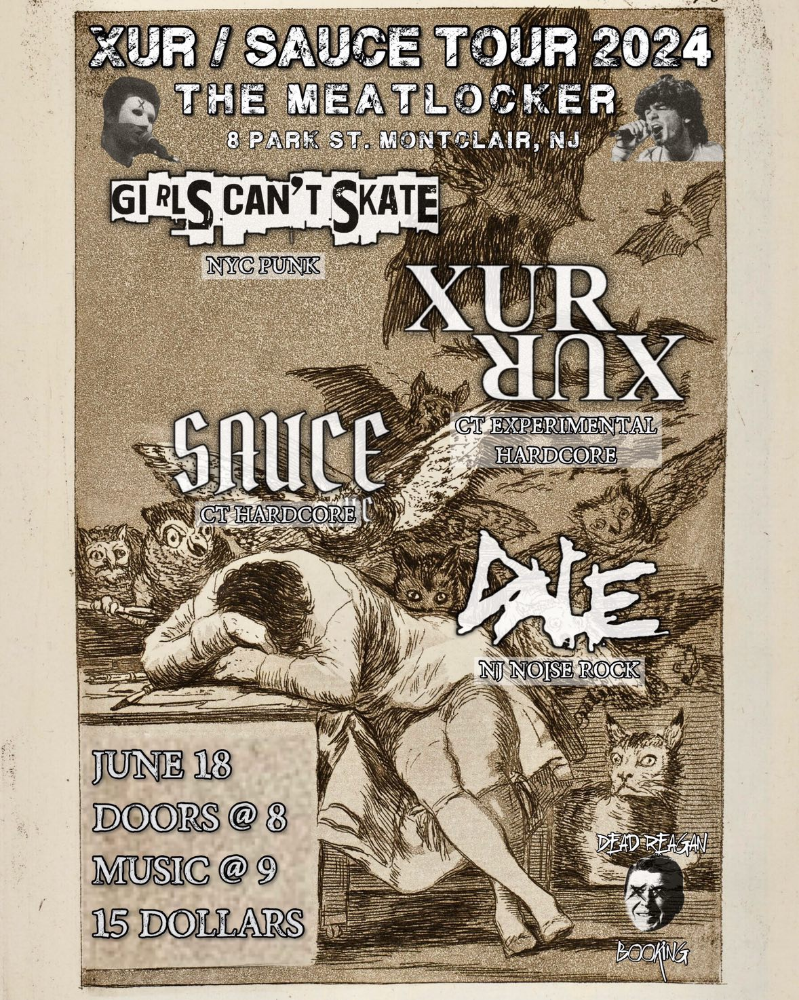
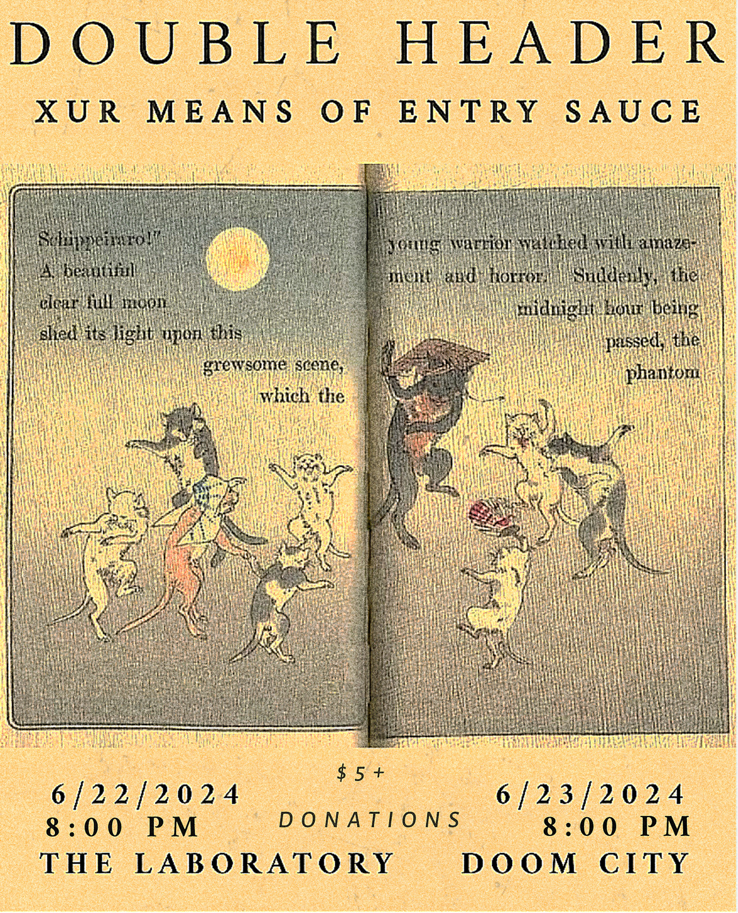
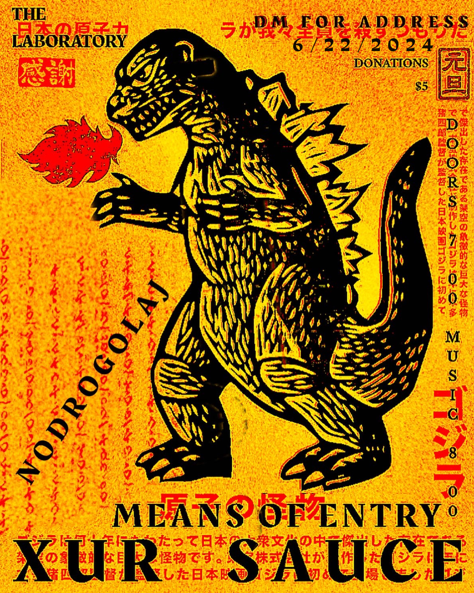
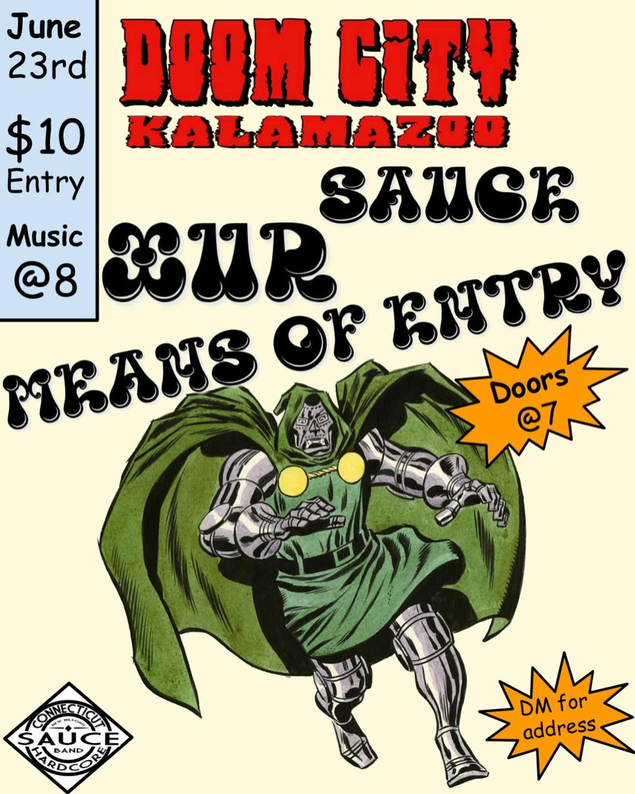
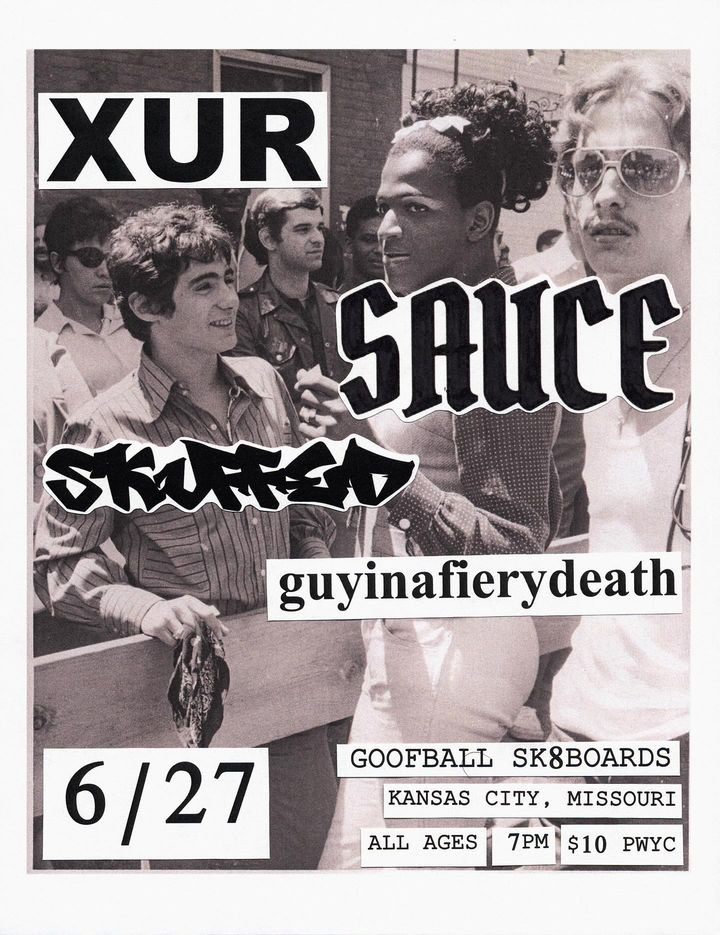
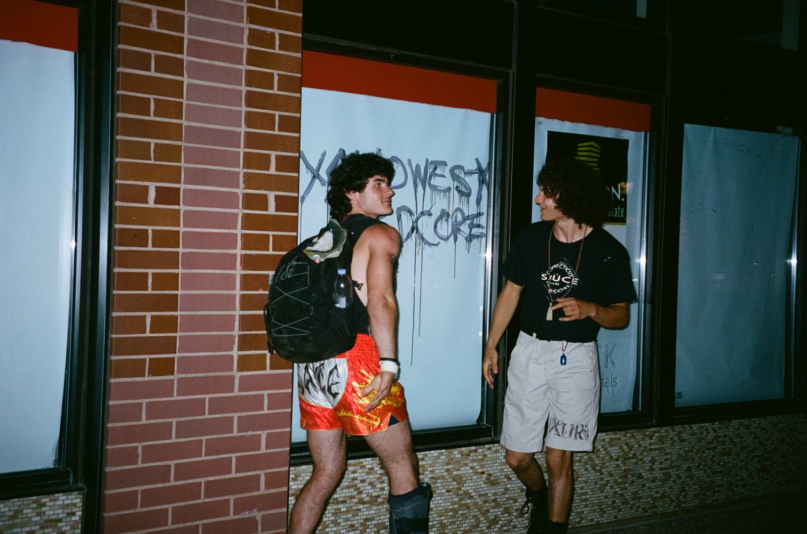
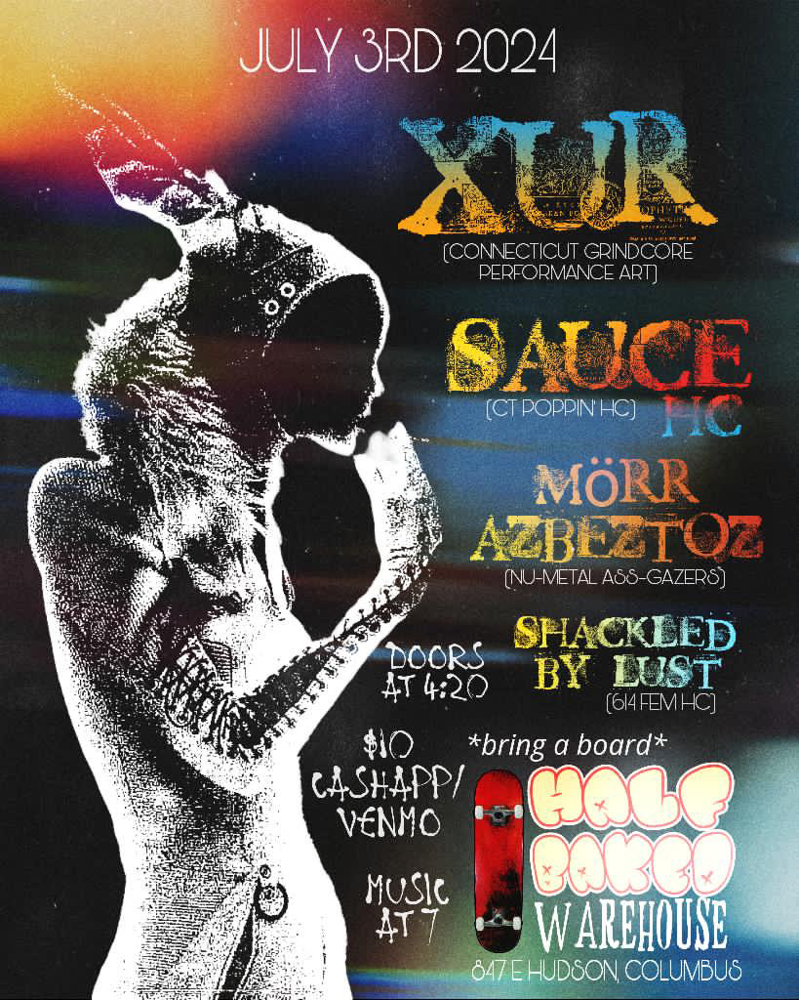

"XUR / SAUCE: TOURING THE COUNTRY!"

This was our first real TOUR. June 18th to July 7th with SAUCE. Here's a recap.
James Wise and I made this promotional video.

MAY 31, 2024: SUB EK FEST

Then we hit the road. Here's the van:


Day 1: Meatlocker. I forgot the mask in Matteo's basement. We crashed at my Uncle Mike's. Thanks dude! Flyer by Dead Reagan Booking, pic by Jack.


Live vid by the Meatlocker folks. Somewhere in the ether is an exclusive Matteo interview from this night.
The next couple days were a blur. Mutator was a dope distillery. Cullen the guy who ran the place gave us free samples. Thanks Cullen! We camped at a Christmas tree farm somewhere in Lancaster.

Bella's Beatdown Bunker, Detroit.

We landed in the fabled land of Kalamazoo, Michigan for an incredible double-header of sweaty nights with Means of Entry. They made these flyers, Gavin made the Doom City one.
  
Live at the Lab.
Doom City captured by Ryan Fluke.


Matteo sleeping.

After Kalamazoo I think we lost all sense of past present and future. We played shows. We slept outside. We drove West.
Jack, somewhere.

Goofball Skate, Kansas City, flyer by Skuffed. 
Elvis Room, STL. Thanks Dredge for setting this one up!

Pic of Jack and I by Em who drove all the way out from Arkansas.

With enough spiritual experiences and esctatic memories to last a lifetime, but still hungry for more, we turned back East. Brain Graffiti and the Mirror folks set up this skatepark show in Champaign, IL which is where we met Megan, our saxophonist. She and Keaton hopped in the van and we gained two members to the crew. Pics by Austin Corley @cameracorley.


Hanging in the Mirror.

Back home, James Wise made this recap and began promoting the barn show.

More days passed. I don't remember many specifics, but I remember when Henry said, "I think we found ourselves." I couldn't agree more.

Finally we made it back to the barn. I tore up my mask and it meant something. We stopped by Henry's and picked up the homemade mead we had been brewing. You know how nothing's perfect in this world except in love letters and skewed retrospection? This night changed my mind. Happy, happy, happy! It was flawless, beautiful, vibrant.
The next day we hiked Pinnacle mountain and I never cried harder. That night when I closed my eyes, I swear I saw the end credits roll.
So the tour was over but we weren't done playing shows just yet. Two more closed the summer: A matinee at Trouble Girl's house and a South Whitney party to round it out. Bristol flyer by Great Frog Society, South Whitney flyer by Zakky Wildcard.


Will King captured the South Whitney show on his camcorder. Thanks Will!
The end.
More pics.